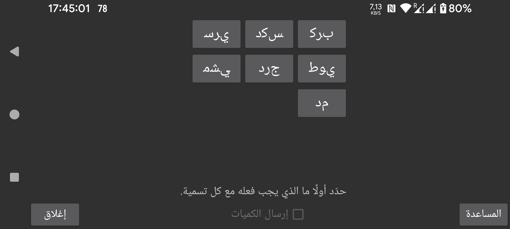

ar be de es fr hi it ja ko nl pl pt ru tr uk uz zh en
فعّل «إرسال الكميات» لإرسال الكميات إلى Libreview. قبل أن تتمكن من تفعيل «إرسال الكميات»، يجب أن تحدد لكل تسمية كيف ينبغي إرسال الكميات المدخلة تحت هذه التسمية إلى Libreview. ويمكن إنشاء التسميات نفسها وتعديلها وحذفها من القائمة اليسرى ← الإعدادات ← «تسميات الكميات».
تنطبق القيود التالية على التسميات التي تُرسل إلى Libreview على شكل تعليقات: بعد تغيير تسمية ما، فإن حذف الكميات أو تعديلها التي أُدخلت تحت التسمية السابقة لن يؤدي إلى تعديلات في Libreview. على سبيل المثال، إذا كانت لديك سابقاً التسمية Bike وأدخلت 20 ثم غيّرت Bike إلى Cycling وعدلت 20 إلى 25، فلن يؤدي ذلك إلى تغيير في Libreview، بل سيظهر كل من Bike 20 وCycling 25 في Libreview. والشيء الوحيد الذي يمكنك فعله هو حذف الأجهزة الحالية في Libreview ثم الضغط على إعادة إرسال البيانات في Juggluco.